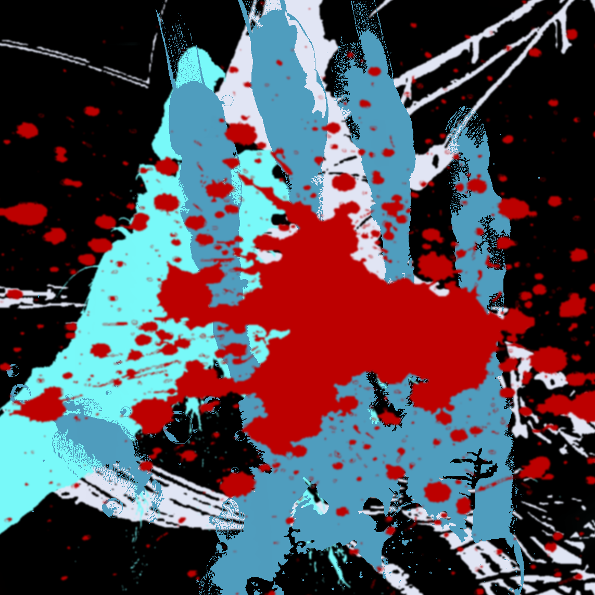
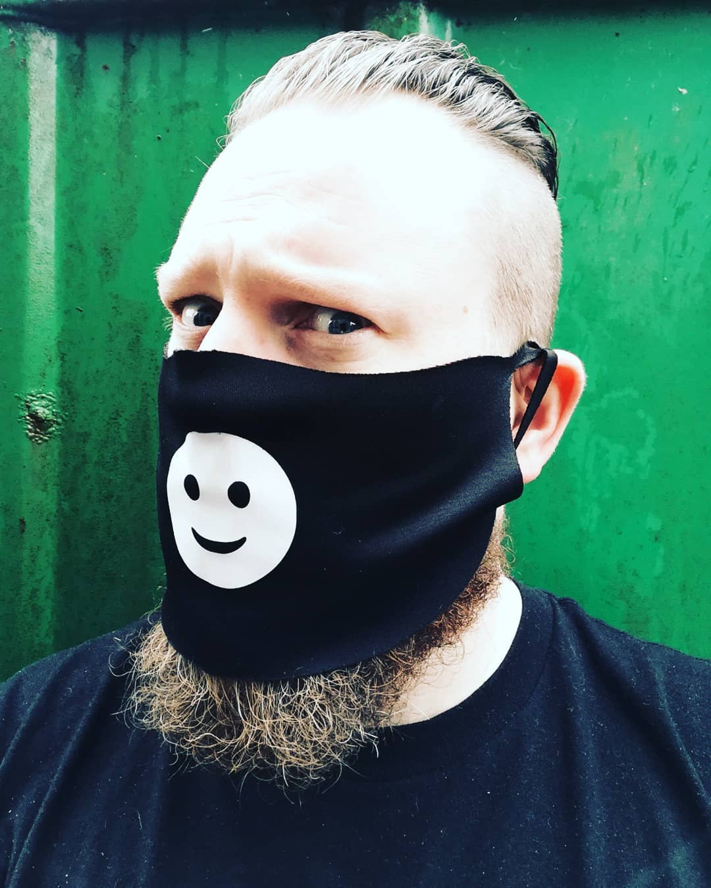
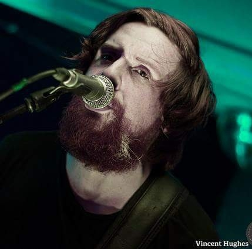

Mayos Hunting for Snare came out of a wild brains of Umrella records co-founders Tomás Concannon (BuryMe with my Money), and Joseph Padfield (Bannered Mare). Each one known for their creativity in recent years with their own bands whlst also starting of umbrella records, a place that the guys can all come together to produce content for their many artists under their ‘umbrella, see what they did there. Artists that include the aforementioned Bannered Mare and Bury Me… but also includes Oscar Mild, Derek Ellard, and now Hunting for Snares, it’s a place where music and videos are all produced to great effect in house. hunting for Snares is put forth as an experiment in audio visual wizardry, their goal being to create a performance piece that uses both forms of media to bring back the scope of live performance.
After my first listen a few days back, I had two words slip out of my mouth. “oh damn”, it conjured within me aspects of Radiohead, Aphex Twin and with some degree of Burial vibes. It is a dark electro pop trip. Presented as a complete 17-and-a-half-minute audio visual project, it is one complete piece of work with each track seamlessly melting into each other. Accompanied by a crazy trippy video of visuals that bring to mind a drunken messed up night. Visuals that were made by the boys themselves during what looks like a very fun day, these need to be seen on a nice high def screen.
I spoke to the both Joe and Tomás earlier in the week about the new project.
Tomás Concannon,
Joseph Padfield.
What was the initial idea behind the Hunting for Snares project?
Joe: ‘HFS was born out of over indulgence. We would always want to write when we got messed up as you do. so we decided to intentionally get loose and write. This is what came out. It's a dark and a lil off centre, much like ourselves’
Tomás: ‘I agree with everything Joe said and to add to that, HFS for me, began when myself and Joe lived together in Galway town in 2016. There may have been some drink taken on one night in question, yes. We botH also found ourselves facing the dismantling of our previous bands Race the Flux and Ka tet and decided, on a whim to have a no holes bash at making a tune, not expecting the idea to go any further. That effort became the first track on the EP and the start of something wonderful’.
Was it important to do the project to tie closely to the visuals?
Joe: ‘I think so anyway, we wanted to have a video for the full EP and it needed to be reflective of the lunacy of some of the parts so we landed with what we have now. It's kind of trance Inducing much like some of the stuff we were at while writing.''
Tomás: ‘I think we made efforts to preserve the spirit of that night as we moved forward onto the rest of the EP and then on into the visuals. It was a night of Darkness, friendship and devilment and the free way in which it was produced has set a precedent that has allowed us to continue like that... as HFS
This is number 1? does that mean there is more to come?
Joe: ‘Yes its most definitely part one of many. We won’t wait so long after writing to release the next one though.’
As a first Ep/presentation it shows everything the two friends are capable of, a dark mix of electro pop blended together with Tomás’s effortless instantly recognisable vocals and Joe’s skilful guitar work, all wrapped together in a trippy delicious visual and audio package. This is a fantastic project put together by two of Galway/Mayo’s best; If they can capture this as a live show, then I look forward to seeing how this will be brought to a stage.
Recorded and produced for Umbrella records in Mariachi studio’s by Joseph Padfield.
THIS PAGE IS A PRODUCTION BY A MODERN MOVEMENT PRODUCTIONS 2021